長期トレンド
JKMとJEPXシステムプライスの推移グラフ
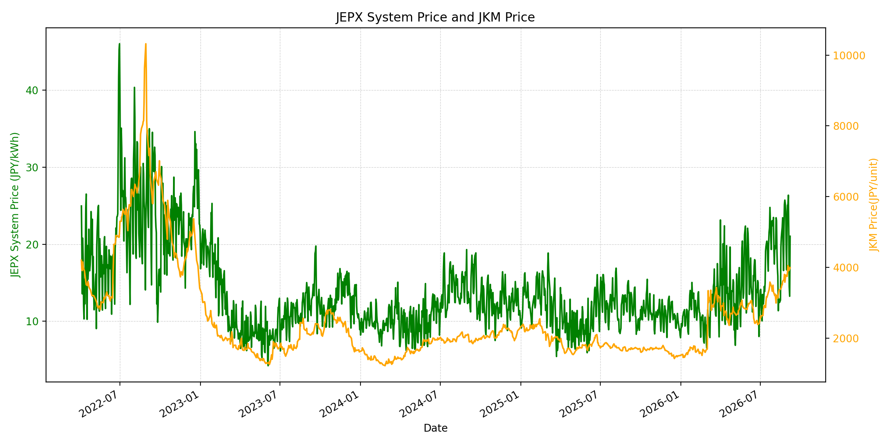
WTIの推移グラフ

JEPXエリアプライスグラフ（直近一年分）
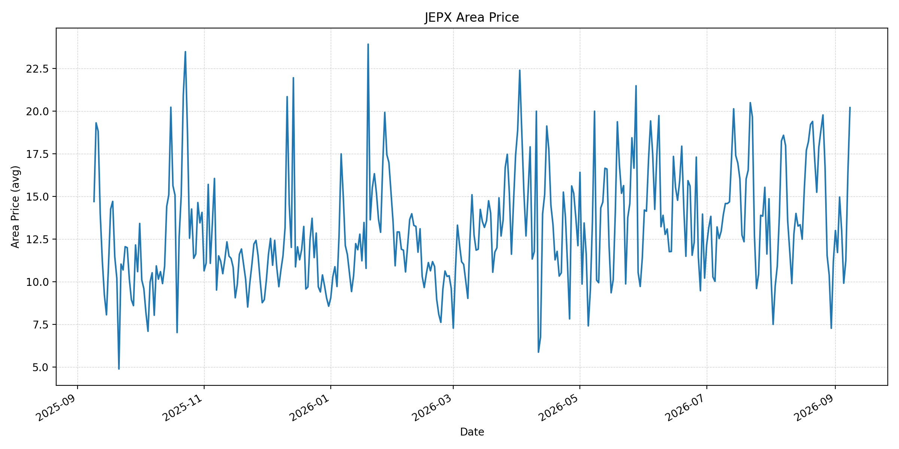
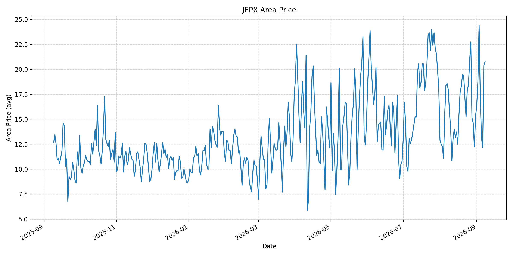
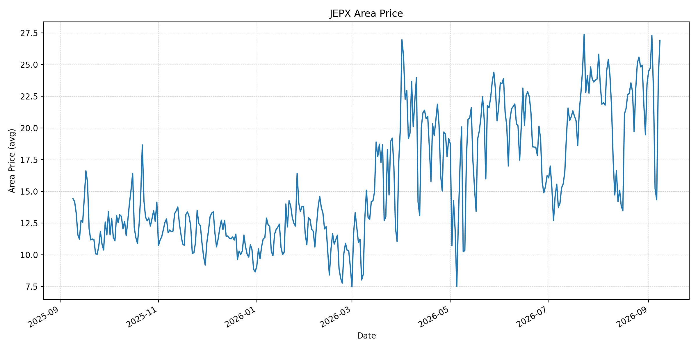
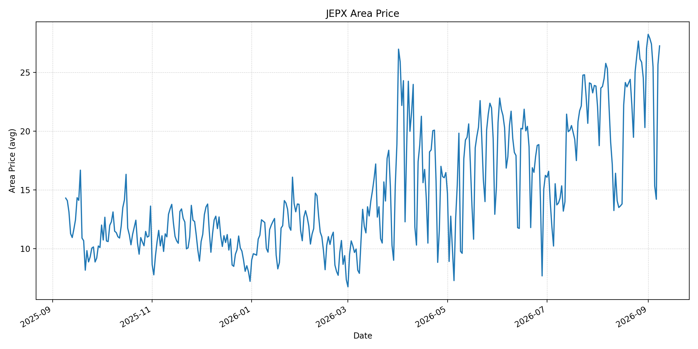
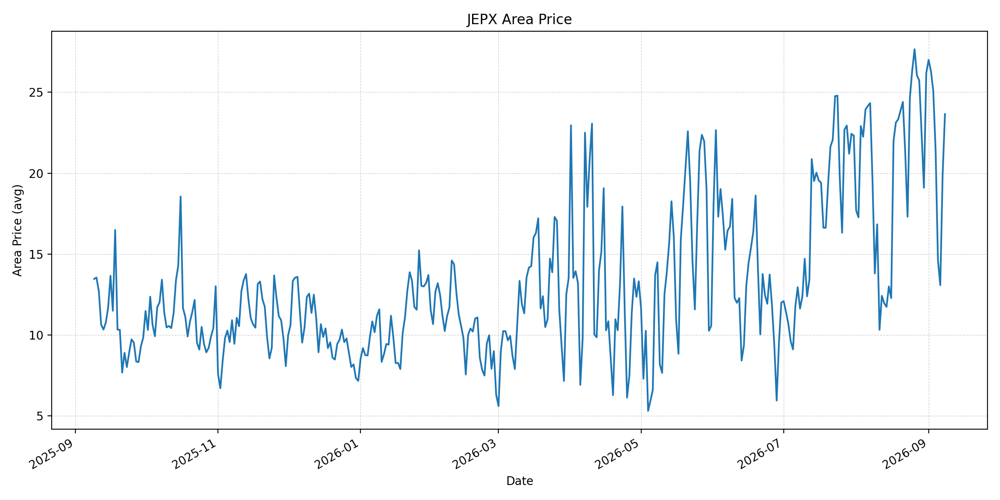
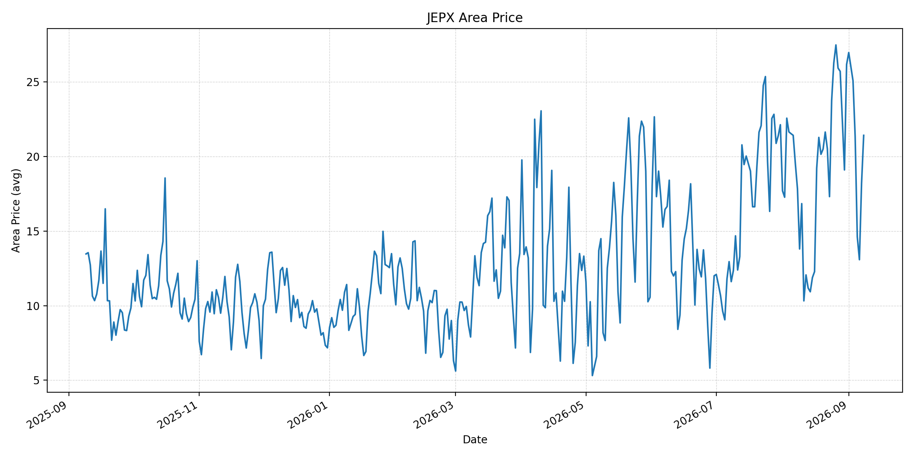
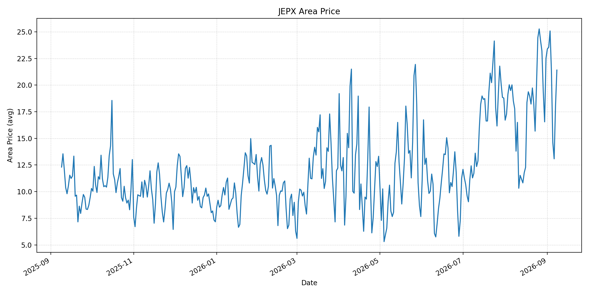
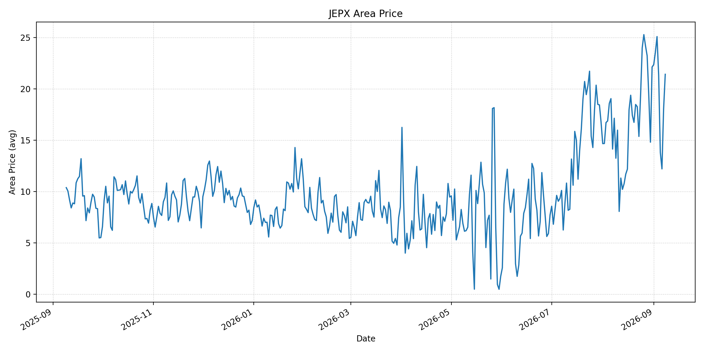
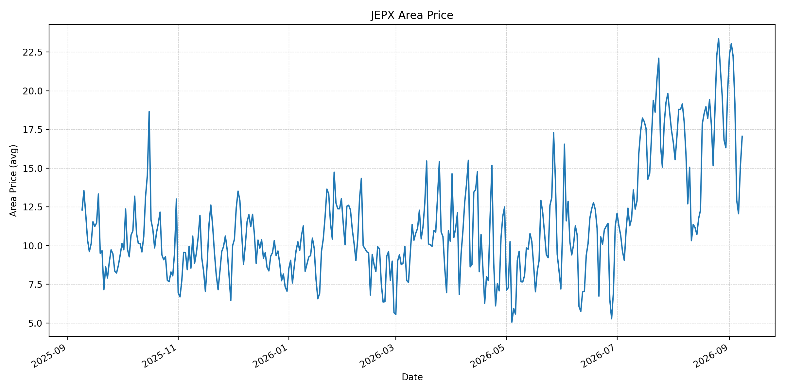
短期トレンド
JKMとJEPXシステムプライスの推移グラフ
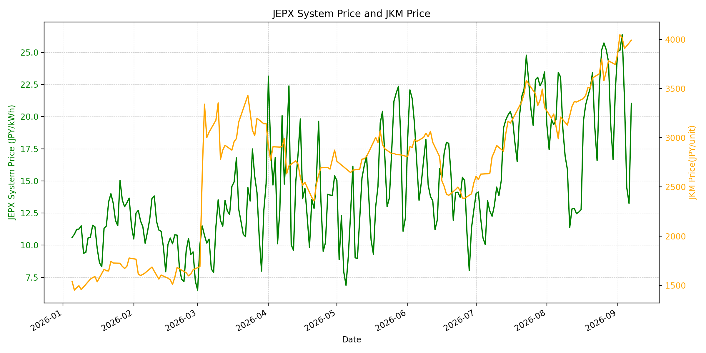
WTIの推移グラフ
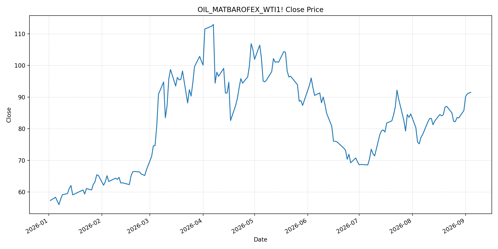
JEPXシステムプライス
最新値は 2026-09-08 分、先週終値は 2026-09-01、先月終値は 2026-08-31 時点の直近値です。
| エリア | 当日価格 | 前日価格 | 前日比（％） | 先週終値 | 先週比（％） | 先月終値 | 先月比（％） | 過去最高値 | 最高値比（％） |
|---|---|---|---|---|---|---|---|---|---|
| システム | 24.13 | 21.04 | 14.69 | 25.07 | -3.75 | 22.10 | 9.19 | 64.06 | -62.33 |
| 北海道 | 20.20 | 16.36 | 23.47 | 13.00 | 55.38 | 11.18 | 80.68 | 73.92 | -72.67 |
| 東北 | 20.76 | 20.38 | 1.86 | 16.41 | 26.51 | 15.25 | 36.13 | 84.92 | -75.55 |
| 東京 | 26.90 | 23.99 | 12.13 | 24.48 | 9.89 | 23.47 | 14.61 | 86.13 | -68.77 |
| 中部 | 27.25 | 25.65 | 6.24 | 28.23 | -3.47 | 27.01 | 0.89 | 52.06 | -47.66 |
| 北陸 | 23.65 | 19.88 | 18.96 | 27.00 | -12.41 | 26.18 | -9.66 | 46.48 | -49.12 |
| 関西 | 21.42 | 18.19 | 17.76 | 26.97 | -20.58 | 26.17 | -18.15 | 46.48 | -53.92 |
| 中国 | 21.41 | 18.04 | 18.68 | 23.39 | -8.47 | 22.51 | -4.89 | 46.48 | -53.94 |
| 四国 | 21.41 | 18.04 | 18.68 | 22.35 | -4.21 | 22.12 | -3.21 | 46.48 | -53.94 |
| 九州 | 17.06 | 15.10 | 12.98 | 22.36 | -23.70 | 20.06 | -14.96 | 40.54 | -57.92 |
LNG先物価格
最新値は 2026-09-07 の LNG(close) です。先週終値・先月終値は 2026-08-31 時点の直近値です。
| 当日価格 | 前日価格 | 前日比（％） | 先週終値 | 先週比（％） | 先月終値 | 先月比（％） | 過去最高値 | 最高値比（％） |
|---|---|---|---|---|---|---|---|---|
| 3991.00 | 3906.00 | 2.18 | 3744.00 | 6.60 | 3744.00 | 6.60 | 10319.00 | -61.32 |
石油先物価格
最新値は 2026-09-04 の OIL(close) です。先週終値は 2026-08-28、先月終値は 2026-08-31 時点の直近値です。
| 当日価格 | 前日価格 | 前日比（％） | 先週終値 | 先週比（％） | 先月終値 | 先月比（％） | 過去最高値 | 最高値比（％） |
|---|---|---|---|---|---|---|---|---|
| 91.48 | 91.30 | 0.20 | 83.40 | 9.69 | 85.76 | 6.67 | 123.70 | -26.05 |
ニュース
イラン情勢に関するニュース
- イランは米国の追加攻撃に報復すると表明し、湾岸の石油・ガス関連インフラが脆弱だと警告しました。参照: Reuters, 2026-09-07
- バンダルアッバースでは米国の経済圧力強化により、港湾周辺の活動低下が報じられています。参照: AP, 2026-09-08
ホルムズ海峡経由の石油・LNGに関するニュース
- 9月8日報道のKplerデータでは、月曜の海峡通航は商品船7隻で前日の8隻を下回りました。参照: Reuters, 2026-09-08
- 中東の輸送混乱が2027年まで続くとの前提で、Goldman Sachsは原油価格見通しを引き上げました。参照: Reuters, 2026-09-08
ホルムズ海峡経由でない石油・LNGに関するニュース
- カタールは輸出再開の可能性を示す動きとして、空のLNG船を湾内へ戻しています。ただし、再開時期と輸送量は不透明です。参照: Reuters, 2026-09-07
- 過去24時間で、海峡を回避するLNG供給量を直接増やす主要な新規公表は確認できませんでした。
日本国内のイラン戦争に関係するニュース
- 過去24時間で、JEPX制度または国内電力需給ルールを直接変更する主要な新規公表は確認できませんでした。
- 日本は中東迂回パイプライン支援と調達先多様化を含む供給強靭化策を進める方針です。参照: Reuters, 2026-08-26
インサイト
ニュース事項による日本の電力市場への影響（短期：数日〜1週間）
- JEPXシステムは 24.13 円/kWhで前日比 14.69%、先週比 -3.75% です。東京 26.90 円/kWh、中部 27.25 円/kWhが高い水準です。
- LNGは 3991.00 で前営業日比 2.18%、WTIは 91.48 ドルで先週比 9.69% です。通航減少と輸送再開の不確実性は、燃料調達のリスクプレミアムを維持させる要因です。
- 短期では、海峡の実通航量、排除区域・航路の具体化、カタールの実際の積み出しを日次で確認します。
ニュース事項による日本の電力市場への影響（長期：1ヶ月〜半年）
- システム価格は先月比 9.19%、LNGは 6.60%、WTIは 6.67% です。燃料高が持続すれば、火力の限界費用を通じて卸電力価格を押し上げる可能性があります。
- 北海道は先月比 80.68%、東北 36.13%、東京 14.61% と上昇しています。燃料要因とエリア別の需給・連系制約を分けて監視します。
- 輸送再開の兆候は供給リスクの緩和に寄与し得ますが、実際のカーゴ量・通航安全が確認されるまでは限定的です。調達多様化と迂回インフラの実効性を中長期で検証します。